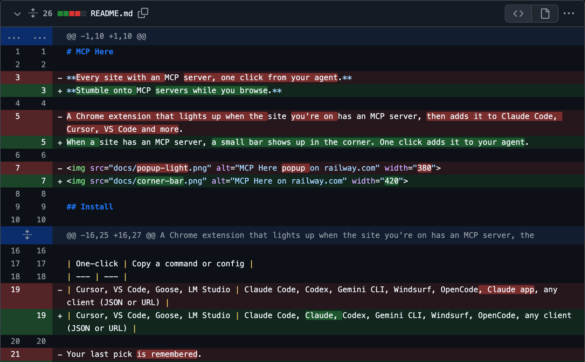
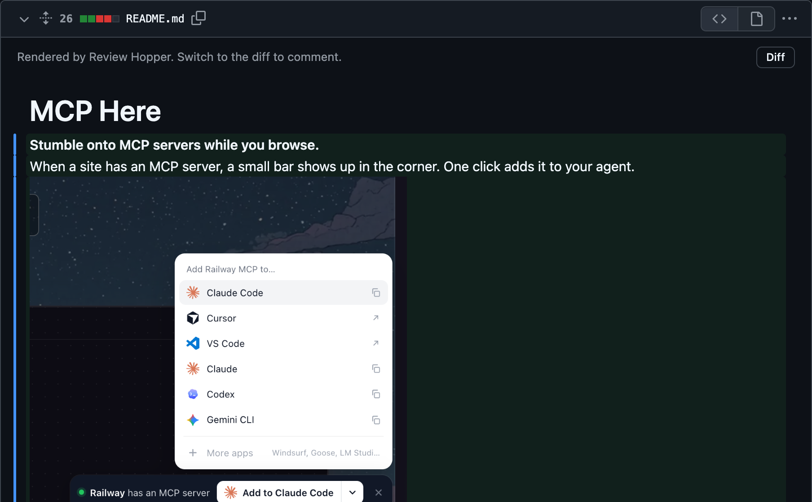
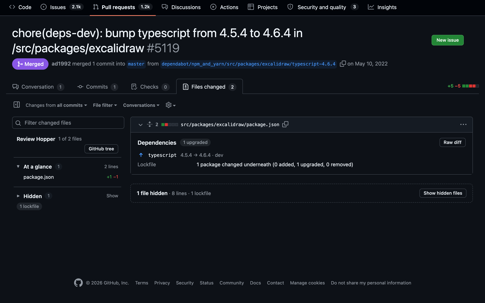
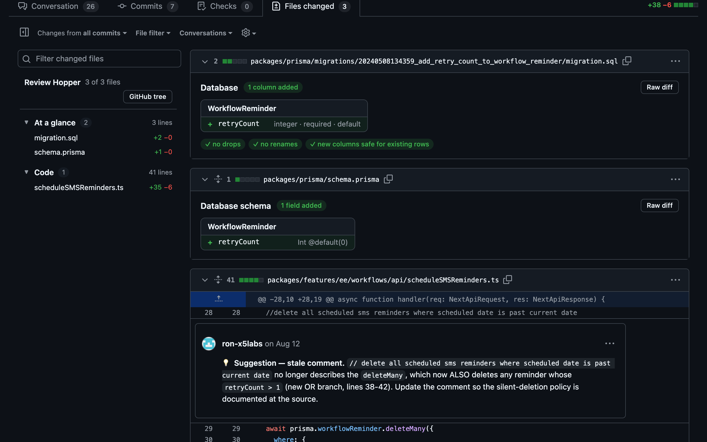
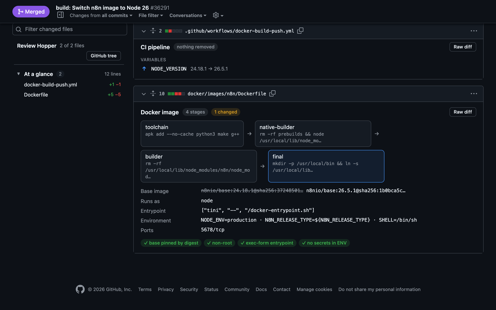
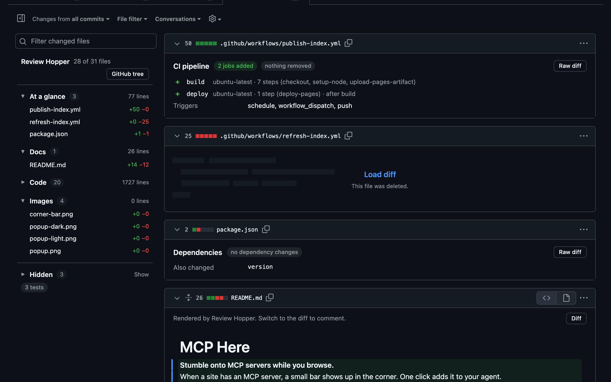

Markdown rendered. Dependencies, migrations, Dockerfiles and CI as summaries. Tests out of the way. Inside GitLab and GitHub.
Add to ChromeFor gitlab.com merge requests and GitHub pull requests
READMEs, specs and ADRs read the way they'll be published, with what changed marked. No more reviewing raw markdown.





